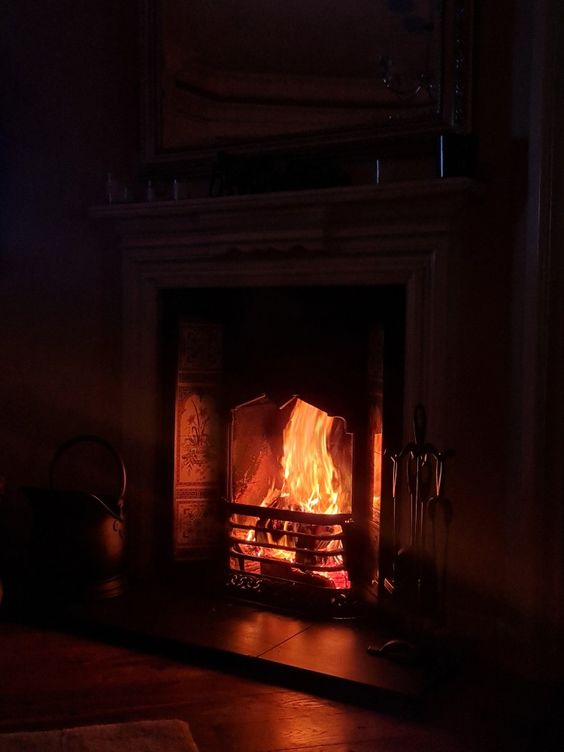
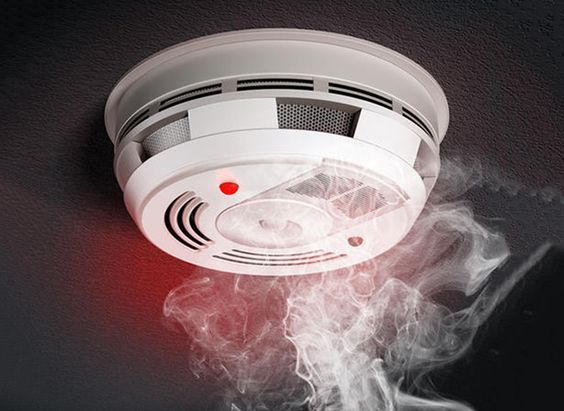
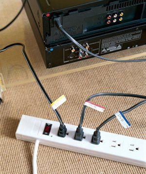

| How to prevent fires |
|
|  Put out the fire in your fire place |
Some homes have a fireplace in their living room and leaving the fire lit would definetely cause a fire. The fire's spark could go to the carpet in your living room therefore causing a house fire. |
| Check the stove |
This is the number 1 causes of home fires. It is easy to forget to turn off your stove, but before leaving your house it would be best to double check so you wouldn't have to worry about a fire. |
|  Install fire alarms |
Installing fire alarms in your home is very useful. Fire alarms can detect smoke, so if you do forget about those cookies in the oven you can still save your house from a fire. |
|  Unplug unused wires |
Plugged wires are also another common causes of house fire. When an item is not being used unplug the wire. Not only will it cause a fire it can use a lot of electricty even when not in use. |